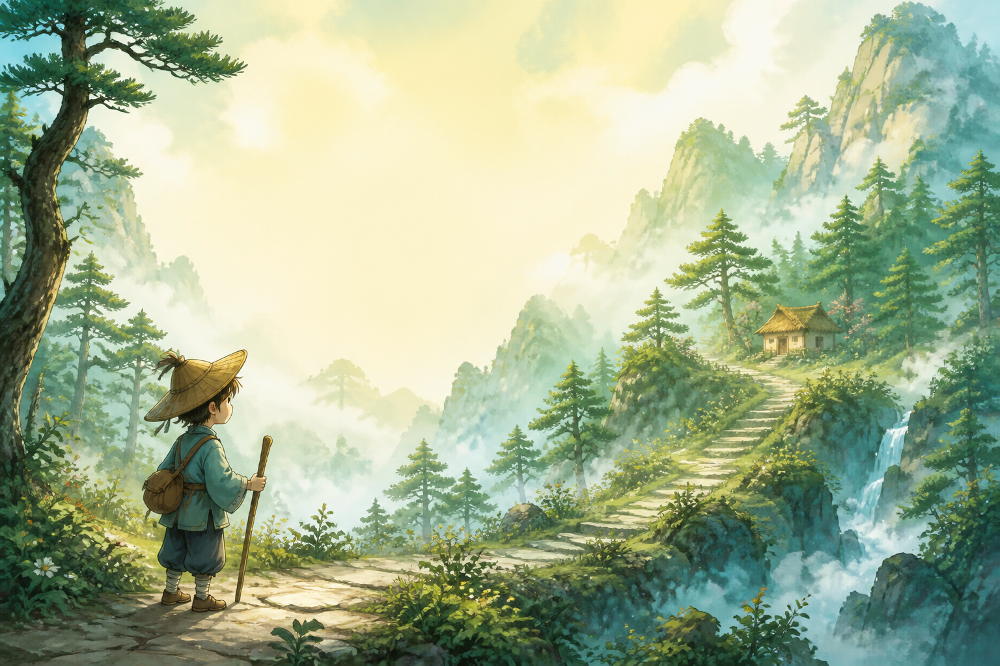
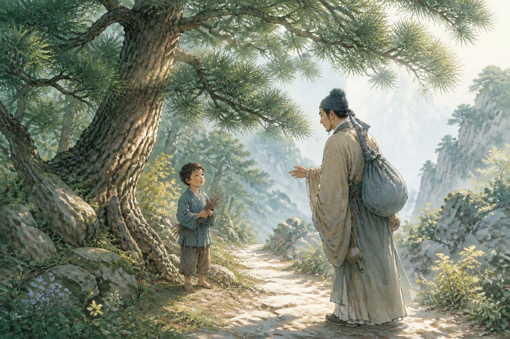
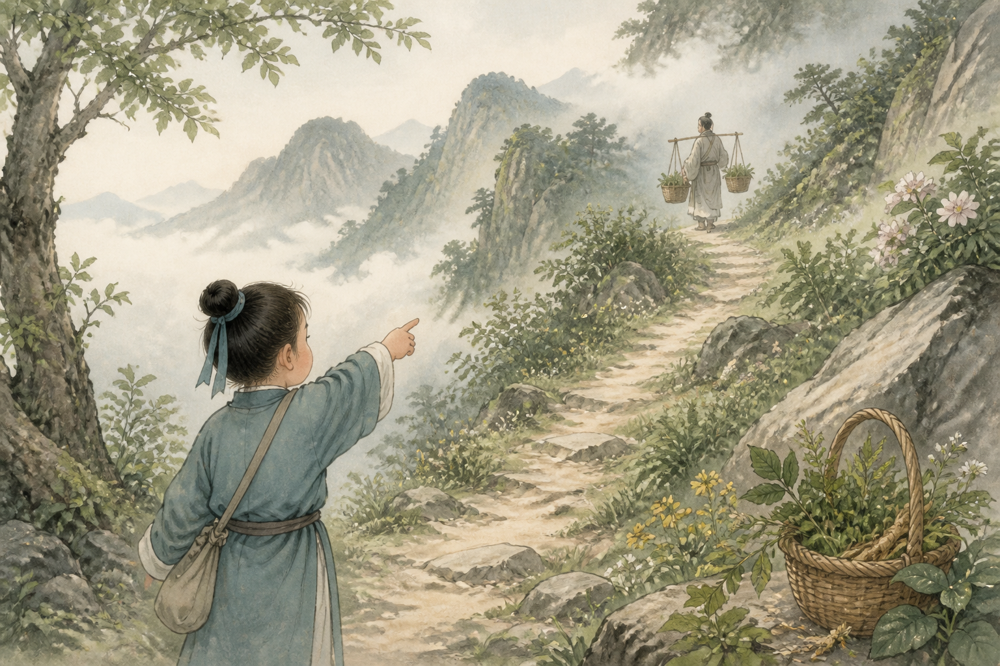
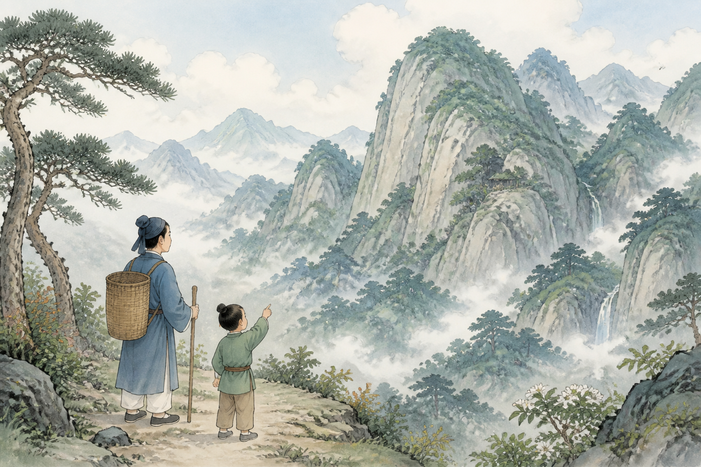
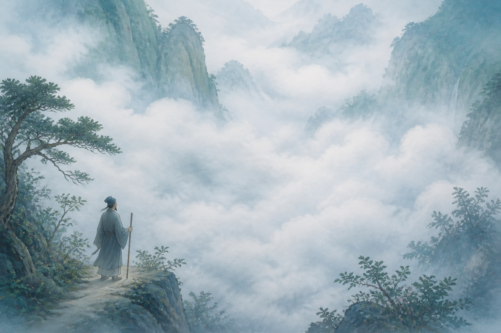
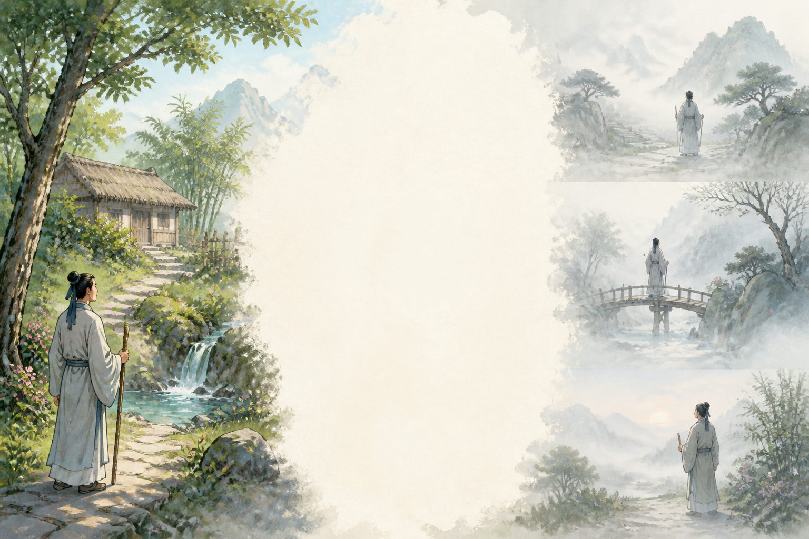
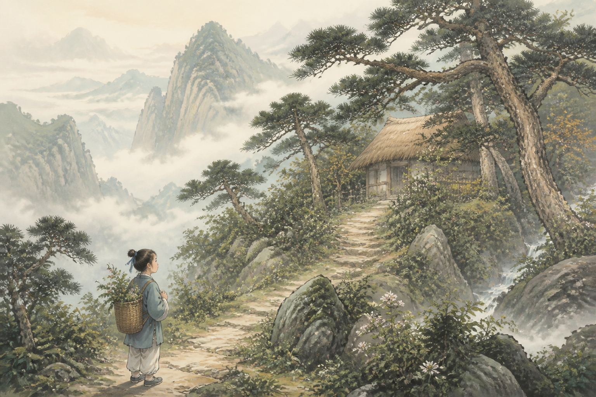
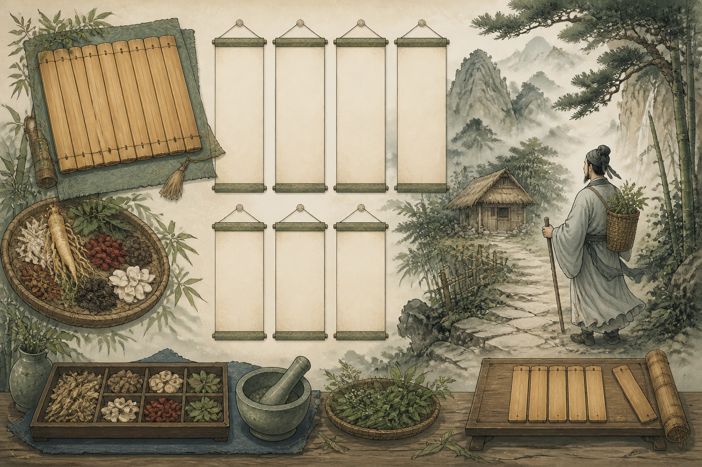

尋隱者不遇
唐・賈島
詩人去找隱居的人，為什麼沒有見到他呢？
松下問童子
言師採藥去
只在此山中
雲深不知處
● 動作/狀態
● 名詞/事物
● 地方
● 時間/數字
● 感受

第一句
地方動作人物
在松樹下問小童。

第二句
動作人物
童子說，老師採藥去了。

第三句
動作地方
只知道他就在這座山裡。

第四句
地方感受
雲霧太深，不知道他在哪裡。

原詩與白話對照
尋隱者不遇 唐・賈島
松下問童子
在松樹下問小童。
言師採藥去
童子說，老師採藥去了。
只在此山中
只知道他就在這座山裡。
雲深不知處
雲霧太深，不知道他在哪裡。

詩人的心情
找人沒找到，卻看見山中安靜的美
當時的心情
詩人來找隱居的人，卻只看到松樹、山路和雲霧。他有點失望，但也感受到山裡很安靜、很美。
我們學到
有時候找不到人，不一定是壞事。可以學會耐心等待，也可以欣賞風景。
A. 松下對話
古松之下，詩人與童子的對話——點開卷軸找出答案。
下一個要找：____
卷軸區 點卷軸尋答案
B. 山徑尋蹤
沿著山路敲開石頭，找出藏在山中的詞語。
下一個要找：____
山石區 敲石尋字

C. 採藥竹簡版
把竹簡詞卡放回正確位置，完成四句詩。
下一個要點：松下
竹簡區 點竹簡入位